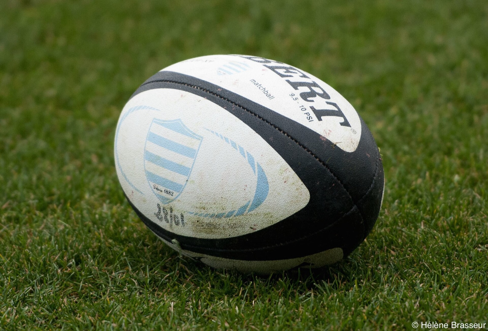

Saturday’s Test in Dublin has the feel of a final before the final. The Springboks arrive at the Aviva Stadium off a narrow defeat to France, and Ireland need a win to keep any chance of reaching the Nations Championship final on 29 November. Kick-off is at 18:40 South African time.
Rassie Erasmus has made five changes to the side that lost to France, the headline one being the return of Eben Etzebeth to the starting XV. Erasmus said this week that the team is determined to fix the mistakes that cost them last weekend. He also defended his decision to change the whole front row hours before the France game, and did not rule out more late changes once Ireland’s team was known.
The history is not in South Africa’s favour. Ireland have won four of the last six meetings between the sides, including the pool match at the 2023 World Cup, and their home record at the Aviva over recent seasons is among the best in world rugby.
Ireland come in with confidence after a big win over Fiji, though they will be without centre Jamie Osborne, who injured a pectoral muscle in that game. Erasmus called them a quality team who always give everything against South Africa.
For the Springboks, the stakes are as much about mood as standings. A win in one of rugby’s hardest away venues would settle any nerves after the France result. A second straight defeat would make for an uncomfortable end to the European tour.

Photo: Gilbert rugby ball on grass by Helene Brasseur, CC BY 2.0, via Wikimedia Commons
The Etzebeth factor
Etzebeth is South Africa’s most-capped player and one of the most experienced men in the squad when it comes to Test rugby against Ireland. His return adds line-out options and physical presence to a pack that will need both in Dublin.
Erasmus has a habit of naming his side early in the week and then adjusting once he sees the opposition team, which he is allowed to do. Ireland were due to name their team on Thursday, so further late changes are possible.
What to watch
The set piece will be central. Ireland are one of the best teams in the world at keeping the ball through many phases, while the Springboks rely on scrum and maul power and a strong kicking game to turn pressure into points. Discipline will also matter, as cards have shaped several big Tests this season.
A win in Dublin would make a strong statement after the France defeat and send the squad home on a high.